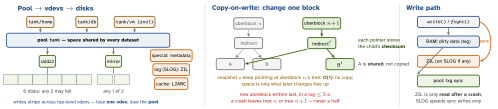

os · folio
In one line: ZFS is a volume manager and a filesystem in one: disks form vdevs, vdevs form a pool, and every dataset draws space from the whole pool. Nothing is overwritten in place — every change is written to new blocks and the tree of checksummed block pointers is re-rooted atomically, so a crash leaves the old or the new state, a snapshot is free, and silent corruption is detected and, given redundancy, repaired.
Download PDF Print view LaTeX source


Vdevs — what each survives
| vdev | survives | notes |
|---|---|---|
| mirror | all but 1 disk | fastest resilver (sequential resilver, 2.0); removable |
| raidz1/2/3 | 1 / 2 / 3 disks | distributed parity; widen by expansion (2.3) |
| draid1/2/3 | 1 / 2 / 3 | raidz + distributed hot spare — fast rebuild (2.1) |
| special | = its own redundancy | metadata (+ small blocks); lose it, lose the pool — mirror it |
| log (SLOG) | ZIL content | low-latency SSD for sync writes; mirroring allowed |
| cache | — | L2ARC; persistent since 2.0; can’t be mirrored |
| spare | — | hot spare taken over on a failure |
ashifts match. A raidz vdev can never be removed.
Integrity
- The checksum of every block lives in its parent’s block pointer — a Merkle tree up to the uberblock, so a disk returning wrong data (bit rot, misdirected write) is caught on read. Default
fletcher4;sha256,sha512,skein,edonr,blake3(2.2). - With redundancy the bad copy is rewritten from a good one (self-healing).
zpool scrubreads everything to find it before you need it. copies=2|3keeps extra copies even on one disk (charged to the dataset).zpool status: per-device READ / WRITE / CKSUM counters; files with permanent errors are listed by name.
Caching
ARC in RAM (adaptive: recently + frequently used). Default cap: the larger of RAM - 1 GiB and 5/8 of RAM. L2ARC on SSD extends it but needs RAM for its headers. Dirty data is capped at RAM/10 by default.
Timeline
Sun starts ZFS 2001 · CDDL source in OpenSolaris 2005 · illumos fork 2010 · OpenZFS 2013 · 0.8 (2019) encryption, raw send, TRIM, device removal · 2.0 (2020) one codebase for Linux + FreeBSD, zstd · 2.1 (2021) dRAID · 2.2 (2023) block cloning, BLAKE3 · 2.3 (Jan 2025) RAIDZ expansion, fast dedup, Direct IO · 2.4 (Dec 2025). CDDL is held incompatible with the GPL, so on Linux ZFS ships as an out-of-tree module.
Datasets & properties (defaults)
recordsize | 128 KiB (512 B–16 MiB); a maximum per block; new files only |
volblocksize | zvols: 16 KiB since 2.2; fixed at creation |
compression | on = lz4, default on since 2.2; also zstd (2.0), gzip |
checksum | on = fletcher4 |
encryption | off; on = aes-256-gcm, per dataset, since 0.8 |
sync | standard · always · disabled (loses acknowledged writes) |
atime | on, with relatime — set off for busy reads |
dedup | off — every block’s hash in a table that must stay hot |
recordsize=16K, PostgreSQL 32K–128K, large sequential files 1M. ashift (sector size, 2n) is fixed per vdev at creation — ashift=12 for 4K disks, 12 or 13 for flash.
Snapshots, clones, replication
zpool create tank raidz2 sda sdb sdc sdd sde sdf
zfs create -o recordsize=1M tank/media
zfs snapshot tank/db@daily-1
zfs rollback tank/db@daily-1 # -r if newer snaps
zfs clone tank/db@daily-1 tank/t # writable, shared
zfs send -i @daily-1 tank/db@daily-2 |
ssh backup zfs receive -u pool/db # delta only
zfs send -w tank/secret@s | ... # raw: still encrypted
zpool scrub tank; zpool status -xIncremental send walks block birth times, not files — cost ∝ change, not size.
Traps
- A snapshot is not a backup: same pool, same disks —
sendit elsewhere. - Adding a single disk as a top-level vdev to a raidz pool makes it the pool’s weak point.
- RAIDZ expansion keeps old blocks at the old data:parity ratio until rewritten.
- A SLOG does nothing for async writes; L2ARC is no substitute for RAM.